The Lakes and Tarns of The Lake District
The Lake District comprises of 16 lakes, 53 tarns, and several “waters”. All possess their own unique features and provide a comforting sense of permanence, standing as they do, framed by glorious backdrops of mountains, fells, and woodland. It is little wonder that William Wordsworth, and his fellow writers and poets have been so inspired.
There is something for all on offer, ranging from the often bustling shores of Windermere to the walks around the quiet remoter locations of Wastwater, Haweswater, Ennerdale and Thirlmere.
Of the tarns, Tarn Hows, is certainly the most popular, attracting an estimated 1 million sightseers per year.
Private power boats are permitted on Windermere, Derwentwater, Ullswater, and Coniston, but limited to a 10 m.p.h. speed limit.
Passenger boats will take you in comfort along these 4 lakes, displaying spectacular views of the shorelines and surrounding hills and mountains.
You may, with a permit, fish the waters, and dive, canoe, wind-surf or sail on most of the other lakes, but swimming is not recommended due to the low water temperatures and underwater currents.
Brief descriptions of the lakes follow. Click on the headings and pictures to discover more and to view additional photographs.
Bassenthwaite |
|
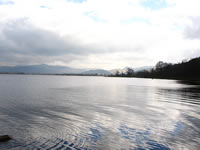 |
Situated to the northwest of Keswick, Bassenthwaite Lake is the most northern lake in The Lake District. It is one of the largest at four miles long and three quarters of a mile wide. |
Buttermere |
|
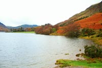 |
A level footpath bounds the 1 1/2 mile long 3/4 mile wide lake. The surrounding area is a firm favourite with walkers, who can choose from leisurely ambles to the more demanding hikes. |
Coniston Water |
|
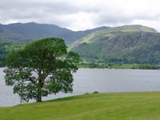 |
Coniston Water is occasionally known as Thurston Water and is 5 miles long, 1/2 mile wide and reaches a depth of 70 feet. Anglers can expect to find perch, trout, eels and pike. |
Crummock Water |
|
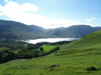 |
Lying next to Buttermere, Crummock Water is two and a half miles long and three quarters of a mile wide.It is fed by many streams, including Scale Force, the Lake District's highest waterfall, dropping one hundred and seventy feet. |
Derwent Water |
|
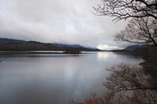 |
Fed by the river Derwent, Derwentwater lies to the South of Keswick. A relatively peaceful lake comprising of seven islands. |
Ennerdale Water |
|
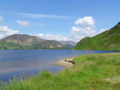 |
The most remote and westerly lake, Ennerdale is two and a half miles long and three quarters of a mile wide. |
Esthwaite |
|
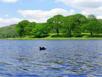 |
Of which William Wordsworth once quoted: “I travelled round our little lake, five miles of a time!” |
Grasmere |
|
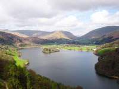 |
William Wordsworth once described this lake as,"The most loveliest spot that man hath found." |
Haweswater |
|
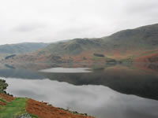 |
Four miles long and half a mile wide, Haweswater resovoir is one of the largest lakes in The Lake District. During times of drought the sunken village of Mardale can be seen. |
Loweswater |
|
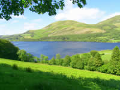 |
Situated in the remote west of The Lake District, Loweswater one of the smallest lakes nestling in the Vale of Lorton. Quite often ignored, it is a sanctuary of peace and quiet. |
Rydal Water |
|
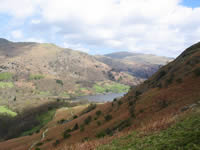 |
A favourite viewpoint of William Wordsworth, Rydal Water is one of the smallest Lake District lakes. |
Tarn Hows |
|
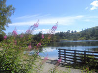 |
Surrounded on three sides by thick woodland, and with glorious views of the Langdale Pikes and Helvellyn in the distance, Tarn Hows is one of the most visited and photographed places in the Lake District. |
Thirlmere |
|
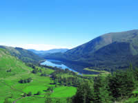 |
At three and a half miles long and just over a mile wide, Thirlmere serves as a resovoir. It was originally two lakes. |
Ullswater |
|
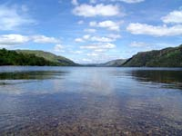 |
Ullswater is the second largest lake in The Lake District at eight miles long and three quarters of a mile wide. Lake cruises are available during the summer. |
Wast Water |
|
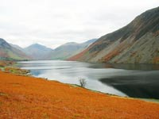 |
Set amid breathtaking scenery Wastwater is surrounded by mountains. It is three miles long and a half mile wide. It is also England's deepest lake at two hundred and sixty feet. |
Windermere |
|
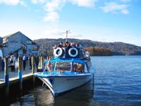 |
Englands largest and most visited lake. At 12 miles long and 1 1/2 miles wide it stretches from Waterhead in the north to Newby Bridge in the south. Something for everyone is to be found at each shoreline resort with Bowness attracting the most visitors. |